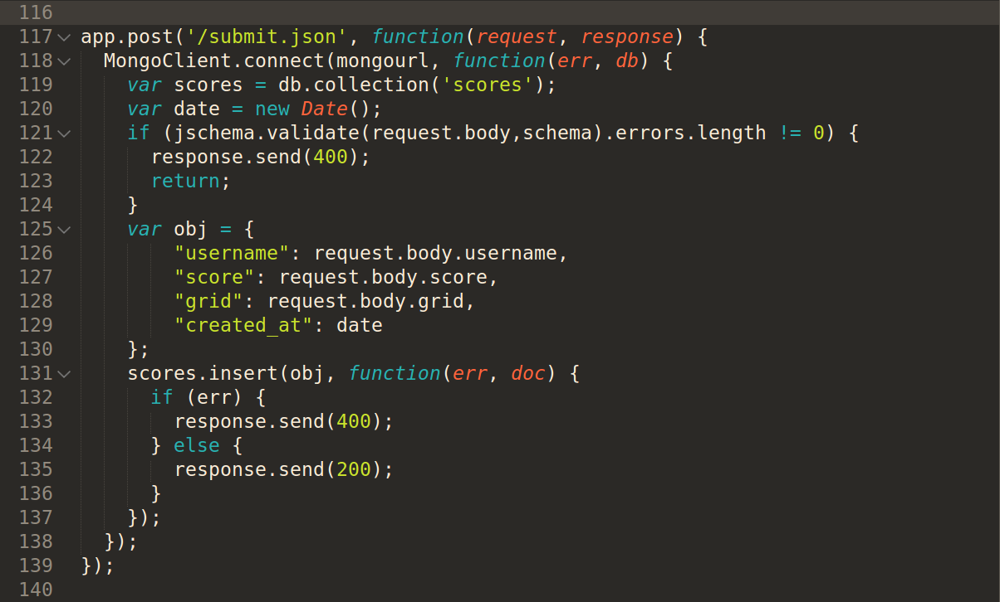
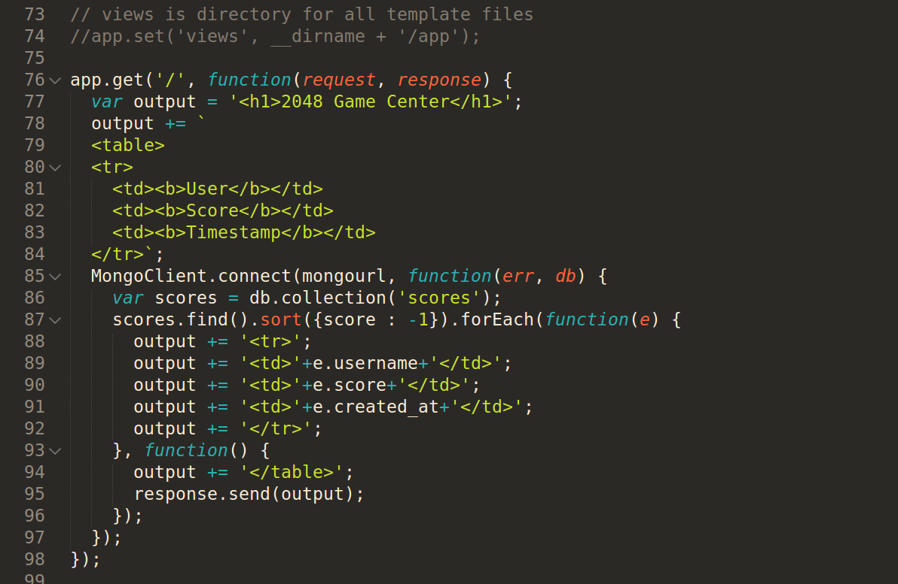
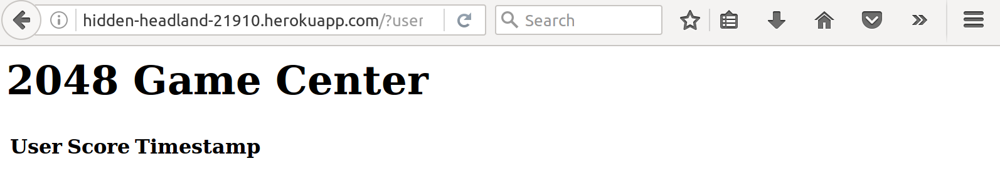
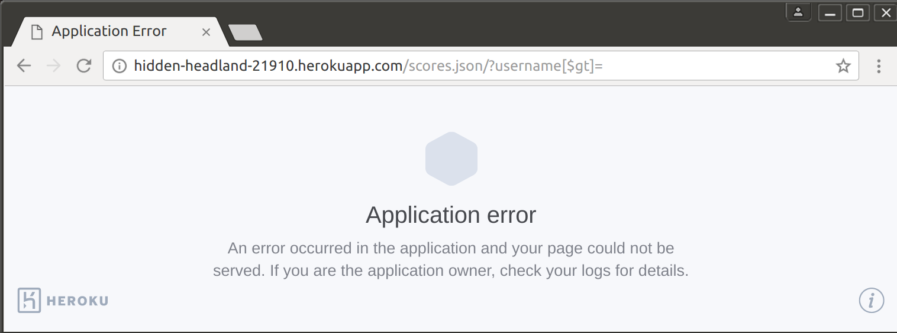

The website being tested is a small web application designed to run the game 2048, and store the scores on a server which uses a database run through mongodb. The goal here is break the web server as much as possible in order to discover any security flaws the system may have.
At first the server was sent scores by impossible names that would not usually be sent through the use of curl. Upon discovering that html code could be inserted into the scores page, this fact was taken advantage of by inserting malicious scripts into the page that sent additional information to the server repeatedly. Additionally, the scores.json page was requested for various different usernames in an attempt to get more data than should be available. by using the query string " /?username[$qt]= " I was able to recieve all user's information.
The biggest vulnerability in this application exists in the ability to post usernames to be displayed on the score board that may contain html scripts with malicious content.
The largest issue is in the lack of checking for script elements (or any element) in the acceptance and printing of the username or score to the score screen. This allows a potential hacker to bypass the same origin resource policy and to use the server to distribute information about the server as well as other users of the website. By inserting a javascript element that can send information to a hacker owned server, this website can easily host macicious content that can damage user's privacy by sending their location somewhere unwanted. What's more, the server already has access to a module that has the ability to check for patterns in JSON strings - jsonschema. This code should be written here:
 As well, the security on ouput of the html is lacking. Should someone want to use a username that could be intertpreted as a script, the output html should be inserted such that all "<" and ">" characters no longer insert elements:  Not only does this leave open the sending of private user data to malicious servers, but it enables the shutdown of the mongoDB servers with the use of repeated posting scripts written in the inserted scripts. After posting thousands of json files to the server, I was able to overwhelm it a small script designed to sent many small pieces of data to the server. The following result occurs: (no usernames, scores, or dates are shown).  The last and possibly worst security issue in this website is the ability to recieve all information housed in the database with the query string /?username[$gt]= . In my case since the server has been overloaded with information, the request times out and gives a website error. But the fact the error is shown gives an indication of what is going on: the server is trying to access too many scores. issue: can insert non integer values as scores. Found in the server post method. Severity: low. Resolved with simple checks
issue: can insert html scripts into the scores page. Found in the server get method for returning the base URL. Severity: high. Resolved with greater checks on the get request or on the post request for html elements
issue: can recieve all usernames and scores from the server using the query "/?username[$qt]=". Found in the get request for scores.json.Severity:high. Resolved by checking query content type for string.
Recommendations:
use jsonschema node module to check for html scripts and integer values for the score.
check usernames before outputting them to html.
check for objects in the username query